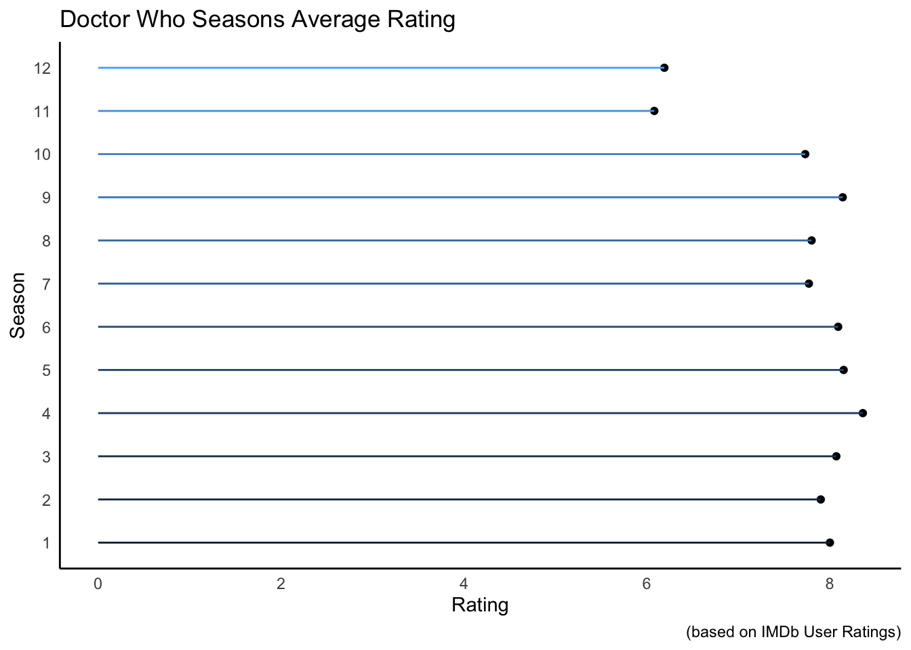
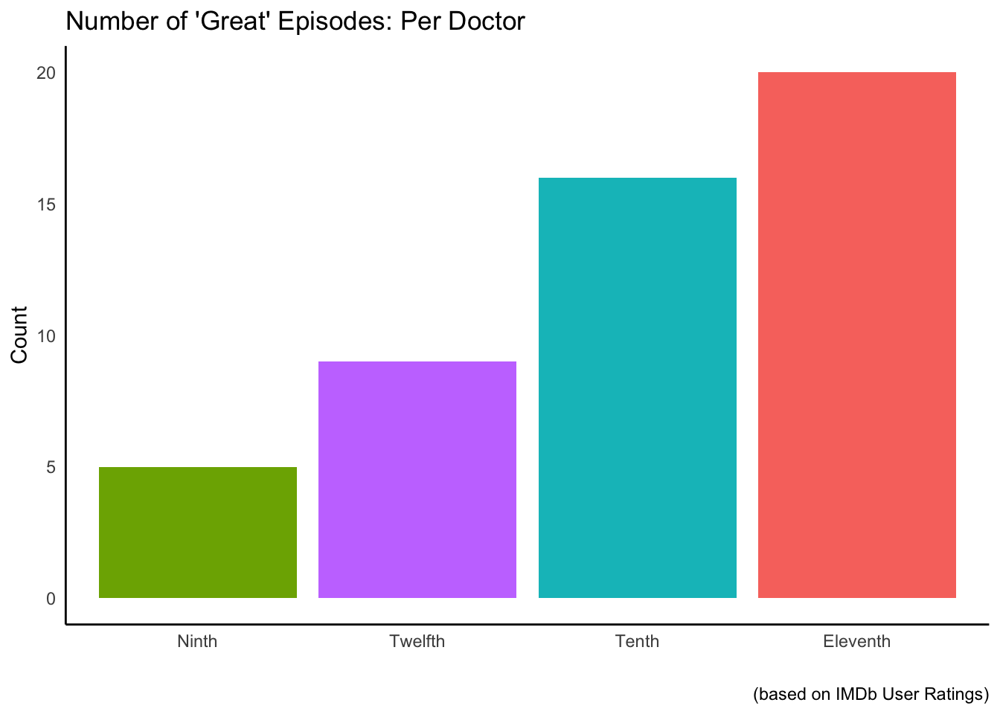

dplyr and ggplot for Visualizationlibrary(ggplot2)
library(stringr)
library(forcats)
library(gganimate)
library(tidytext)I am still getting used to the idea of a few of these functions so if this seems all over the place, there is a reason for that!
I came across this post on r/dataisbeautiful and I was instantly convinced to give it a shot!
The method I used was a little bit convoluted and hacky. What I am going to show here is how to read data off of a website and then show you how the data looks, and how to plot it in the way we would like.
Further down the line when I am more comfortable with the complex, I can make a more detailed tutorial.
For now, we will be downloading the file hosted here
# First read in the csv hosted on my Github
doctorwho <- read_csv("https://raw.githubusercontent.com/DavidBrocker/personal/master/files/DoctorWho_Ratings.csv")## Warning: Missing column names filled in: 'X1' [1]## Parsed with column specification:
## cols(
## X1 = col_double(),
## Season = col_double(),
## EpisodeNumber = col_double(),
## Doctor = col_character(),
## Title = col_character(),
## Ratings = col_double(),
## Quality = col_character()
## )head(doctorwho)## # A tibble: 6 x 7
## X1 Season EpisodeNumber Doctor Title Ratings Quality
## <dbl> <dbl> <dbl> <chr> <chr> <dbl> <chr>
## 1 1 1 1 Ninth Rose 7.5 Good
## 2 2 1 2 Ninth The End of the World 7.6 Good
## 3 3 1 3 Ninth The Unquiet Dead 7.5 Good
## 4 4 1 4 Ninth Aliens of London 7 Regular
## 5 5 1 5 Ninth World War Three 7 Regular
## 6 6 1 6 Ninth Dalek 8.7 GreatFrom our dataset we can see that we have information on the following:
Season Number
Episode Number
Episode Title
IMDb User Rating
Categorical Rating
We can do a few things with this data. First, lets see which doctor has the most episodes.
doctorwho %>%
group_by(Doctor) %>%
count(sort=T)## # A tibble: 5 x 2
## # Groups: Doctor [5]
## Doctor n
## <chr> <int>
## 1 Eleventh 55
## 2 Tenth 42
## 3 Twelfth 27
## 4 Thirteenth 22
## 5 Ninth 13The eleventh doctor wins out here!
Next it might be fun to see which season had the highest rating and then graph that.
avg_season <- doctorwho %>%
# Make Season the target for how we will be viewing ratings
group_by(Season) %>%
# Make a new summary column with will average the ratings
# per season
summarise(avg=round(mean(Ratings),2),.groups="drop")
avg_season## # A tibble: 12 x 2
## Season avg
## <dbl> <dbl>
## 1 1 8
## 2 2 7.9
## 3 3 8.07
## 4 4 8.36
## 5 5 8.15
## 6 6 8.09
## 7 7 7.77
## 8 8 7.8
## 9 9 8.14
## 10 10 7.73
## 11 11 6.08
## 12 12 6.19avg_season %>%
ggplot(aes(factor(Season),avg))+
geom_point()+
geom_segment(aes(Season,xend=Season, y=0, yend=avg,color=Season))+
coord_flip()+
theme_classic() +
theme(legend.position = "none",
axis.ticks = element_blank()) +
labs(x="Season",y="Rating",
title="Doctor Who Seasons Average Rating",
caption="(based on IMDb User Ratings)") 
Okay–full disclosure that the colors do not look the best but we can fix that a little later on.
The takeaway from this is that the last two seasons were rated as the worst with Season 4 being rated as the best.
Another question might be which Doctor has the highest rated episodes?
Luckily we have a column with categorical information that tells us what ratings correspond to “Great”.
Here is the system used: < 5.0 = Garbage < 6.5 = Bad < 7.5 = Regular < 8.5 = Good < 10 = Great
So we could either filter(Ratings>8.5) or we could filter(Quality=="Great").
Grouping by Doctor ensures that the information of who the Doctor was that recieved that rating.
doctorwho %>%
group_by(Doctor,Ratings) %>%
filter(Quality=="Great") %>%
group_by(Doctor) %>%
count() %>%
ggplot(aes(fct_reorder(Doctor,n),n,fill=Doctor)) +
geom_bar(stat="identity") +
theme_classic()+
theme(axis.ticks = element_blank(),
legend.position = "none") +
labs(x="",y="Count",
title="Number of 'Great' Episodes: Per Doctor",
captions="(based on IMDb User Ratings)")
To be honest, no surprise here either!
Lastly, let’s construct a heatmap of all of the episodes of Doctor Who.
# These are the custom colors we will be using for our ratings
cols=c("Bad"="red2",
"Garbage" ="dodgerblue2",
"Great" ="greenyellow",
"Regular"="darkorange1",
"Good" ="gold1")
# Plotly is a package add-on that will make our graph interactive
# This is how it can be specially formatted
doctorwho_pltly <- doctorwho %>%
mutate(text=paste0("Season: ", Season, "\n",
"Episode: ", EpisodeNumber,"\n",
"Title: ", Title, "\n",
"Doctor: ",Doctor))
dw_p <- doctorwho_pltly %>%
# Notice the text=text in the aesthetics
ggplot(aes(factor(Season),EpisodeNumber,fill=Quality,text=text)) +
geom_tile(colour="black")+
geom_text(aes(label=Ratings))+
scale_fill_manual(values=cols)+
theme_classic()+
theme(axis.ticks = element_blank()) +
labs(x="Season",y="Episode #",
title="Doctor Who IMDb Ratings: 2005-2020")
# This is what makes the plot interactive
pp <- ggplotly(dw_p,tooltip = "text")
#pp
library(htmlwidgets)
saveWidget(pp,"DW_plot.html",selfcontained = F)Copyright © 2020 David Brocker All rights reserved.